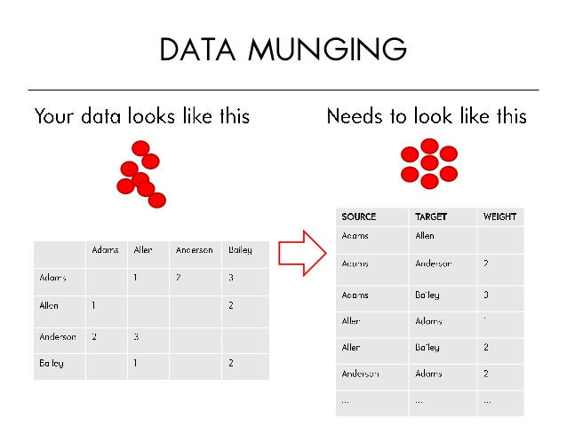
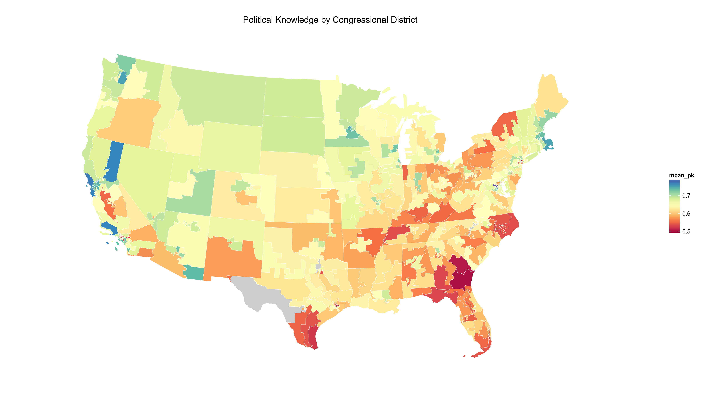
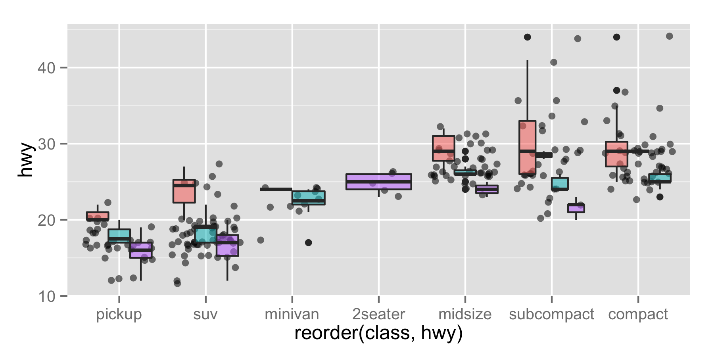
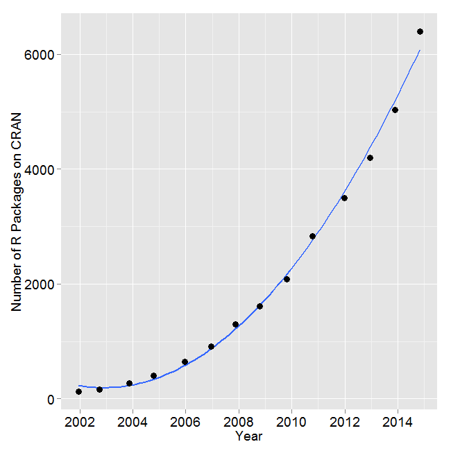

- Who you are.
- What you did this summer.
- What experience, if any, you have with data analysis, programming languages, etc.
Using R for Data Wrangling, Analysis, and Visualization
Lecture 1: Course Intro and Getting Started
Dr. Yphtach Lelkes
Hello!
What is this course about?
- Getting
- Cleaning
- and Presenting data. all within R.
Data Munging/Wrangling

Data scientists, according to interviews and expert estimates, spend from 50 percent to 80 percent of their time mired in this more mundane labor of collecting and preparing unruly digital data, before it can be explored for useful nuggets
Data Munging/Wrangling

Data Munging/Wrangling

Aggregation
library(dplyr)
iris %>% group_by(Species) %>% summarise(m = mean(Petal.Length), sd = sd(Petal.Length),
n = length(Petal.Length))
## Source: local data frame [3 x 4]
##
## Species m sd n
## 1 setosa 1.462 0.1736640 50
## 2 versicolor 4.260 0.4699110 50
## 3 virginica 5.552 0.5518947 50
Visualization
Visualization

Visualization

Interactive Graphics
Error-Free Publication Quality Tables
m1 <- lm(mpg ~ hp, data = mtcars)
m2 <- lm(mpg ~ hp + drat, data = mtcars)
m3 <- lm(mpg ~ hp + drat + factor(gear), data = mtcars)
htmlreg(list(m1, m2, m3), custom.coef.names = c("Intercept", "Gross horsepower",
"Rear axle ratio", "Four foward gears", "Five forward gears"))
| Model 1 | Model 2 | Model 3 | |
|---|---|---|---|
| Intercept | 30.10*** | 10.79* | 16.31* |
| (1.63) | (5.08) | (6.43) | |
| Gross horsepower | -0.07*** | -0.05*** | -0.06*** |
| (0.01) | (0.01) | (0.01) | |
| Rear axle ratio | 4.70*** | 3.51 | |
| (1.19) | (1.85) | ||
| Four foward gears | -0.28 | ||
| (2.14) | |||
| Five forward gears | 3.76 | ||
| (2.16) | |||
| R2 | 0.60 | 0.74 | 0.78 |
| Adj. R2 | 0.59 | 0.72 | 0.75 |
| Num. obs. | 32 | 32 | 32 |
| ***p < 0.001, **p < 0.01, *p < 0.05 | |||
Error-Free Documents
The effect of horsepower on MPG is \Sexpr{round(m1$coefficients[2],2)}.
The effect of horsepower on MPG is -0.07
Our schedule
Readings
- Journal articles related to ideas will be posted shortly
- More concerned that you practice the ideas than read about them
- Lots of books out there. You can buy them, but I think you can get by just fine without them.
- R Cookbook by Teetor
- R for Everyone by Lander
- ggplot2 by Wickham
Grades and formalities
- Weekly problem sets (will be assigned by Friday and due by Wednesday) 30 percent
- Final project
- Apply tools to a dataset of your choosing, need to include visualization and tables in a publication quality document. Github repository and interactive graphic. More details to come. 60 percent
- 5 minute presentation in slidify or beamer, 10 percent
What is R?
- A programming language designed for statistical applications
- A statistical environment for data analysis
Why do we like R so much?
- It’s free and open-source
- It’s cross-platform — the same code will produce the same results on Windows, Mac, or Linux
- It’s easy to use and to program with
- It’s regularly updated — there’s a new major version roughly every year, with intermediate revisions every 4–5 months
- It’s becoming the lingua franca of serious empirical work in the social sciences
- It’s already the lingua franca of applied statistics
Installing R (on Windows)
- Open http://www.r-project.org/ in your browser.
- Click on “CRAN”. You’ll see a list of mirror sites, organized by country.
- Select a site near you.
- Click on “Windows” under “Download and Install R”.
- Click on “base”.
- Click on the link for downloading the latest version of R (an .exe file).
- When the download completes, double-click on the .exe file and answer the usual questions.
Installing R (on OS X)
- Open http://www.r-project.org/ in your browser.
- Click on “CRAN”. You’ll see a list of mirror sites, organized by country.
- Select a site near you.
- Click on “MacOS X”.
- Click on the .pkg file for the latest version of R, under “Files:”, to download it.
- When the download completes, double-click on the .pkg file and answer the usual questions.
Using the command line
RStudio
- Integrated Development Environment
- Other IDEs out there
- Can use datajoy, eclipse, emacs
Install RStudio
R Packages

Installing development versions of packages
install.packages("arm")
Installing development versions of packages
require(devtools)
install_github(repo="coefplot",username="jaredlander")
Loading packages
require(coefplot)
library(coefplot)
Sometimes we don't want to call up the package into memory
Try the following.
m3 <- lm(mpg ~ hp+ drat + factor(gear), data= mtcars)
install coefplot
library(coefplot)
coefplot(m3)
install arm
library(arm)
coefplot(m3)
coefplot::coefplot(m3)
arm::coefplot(m3)
Sometimes we don't want to call up the package into memory
library(dplyr)
library(plyr)
## -------------------------------------------------------------------------
## You have loaded plyr after dplyr - this is likely to cause problems.
## If you need functions from both plyr and dplyr, please load plyr first, then dplyr:
## library(plyr); library(dplyr)
## -------------------------------------------------------------------------
##
## Attaching package: 'plyr'
##
## The following objects are masked from 'package:dplyr':
##
## arrange, count, desc, failwith, id, mutate, rename, summarise,
## summarize